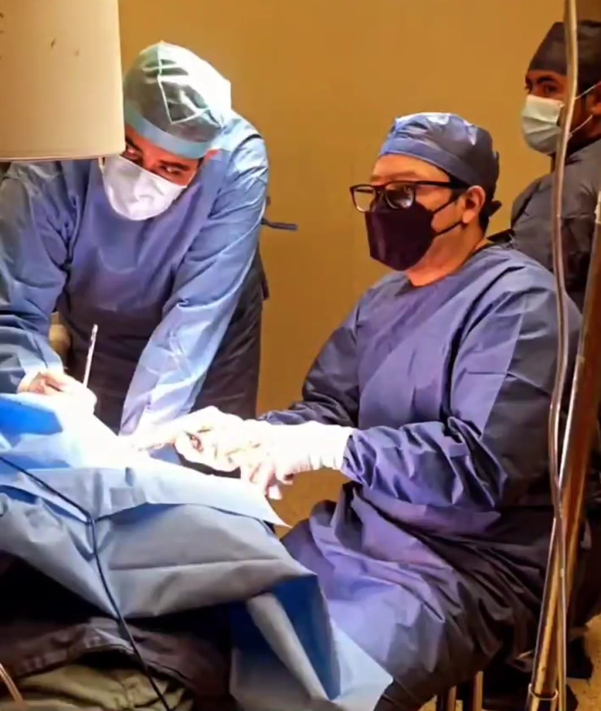
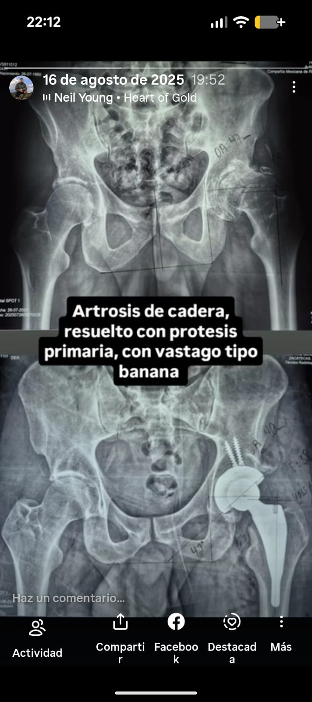

Hola, soy médico traumatólogo y ortopedista egresado de la Universidad Autónoma de Zacatecas, especializado en cirugía articular de tobillos, rodillas y caderas, así como en el tratamiento de traumatología en general.
"Tener una vida sin dolor es posible, y yo puedo ayudarte a lograrlo. Mi objetivo es brindarte un cuidado personalizado, basado en la confianza y el respeto, para mejorar tu calidad de vida."




Hospital San José
Ramón López Velarde 304, Zacatecas Centro
98000 Zacatecas, Zac.
Dirección: Mariano Arista 811-1, Tequis, De Tequisquiapan, 78250 San Luis Potosí, S.L.P.
Abrir en Google Maps